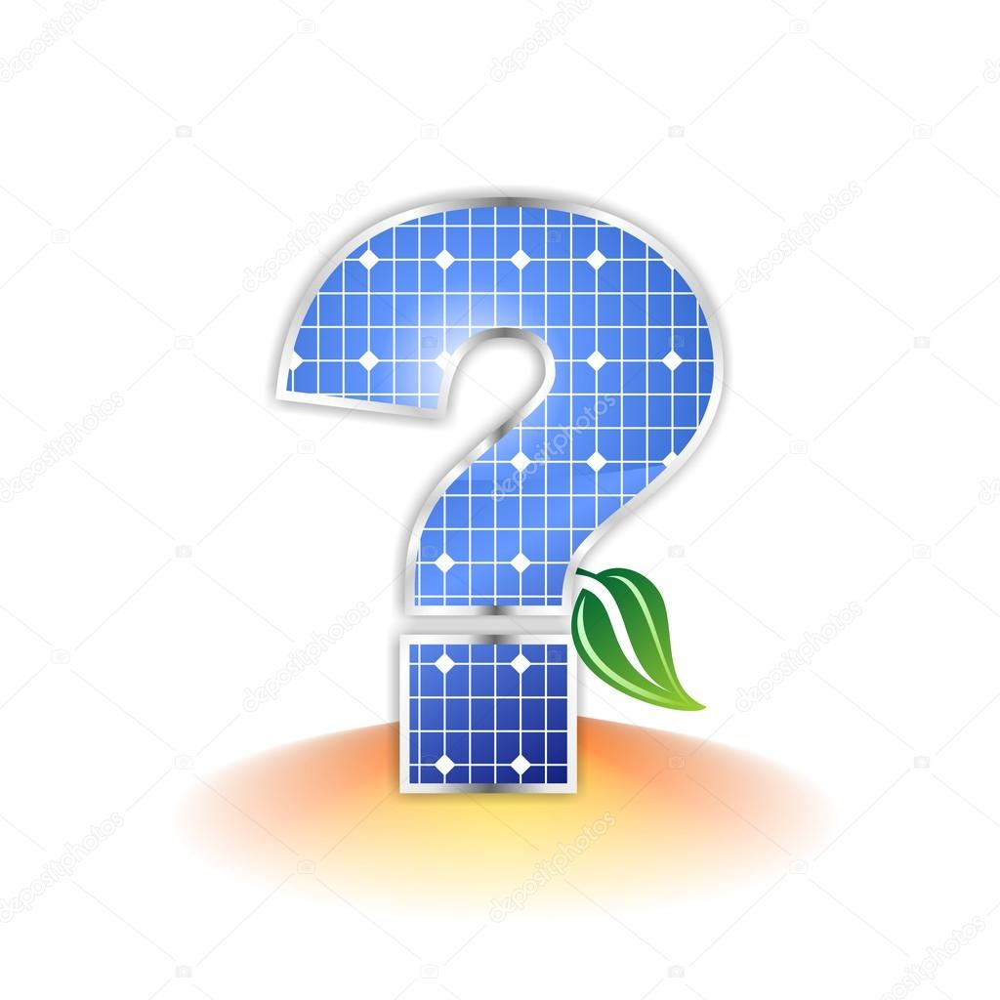

Welcome to the "About Solar" page.
This page will tell you everything
you need to know about solar panels.
About Solar

What is a Solar Panel?
 A Solar Panel is a panel designed to absorb the sun's rays
A Solar Panel is a panel designed to absorb the sun's rays
as a source of energy for generating electricity or heating.
The Solar panel is placed on your roof where the it takes the
sun’s rays called photons and turns the rays into electricity.
How does it work?
Solar Panels are made of Photovoltaic solar cells. Photovoltaic solar cells generate electrical power by converting solar radiation into electricity. This energy source has a wide variety of uses such as calculators, houses, telecommunications, lighting and medical refrigeration for developing countries. The solar panels are made out of silicon. The silicon is made into wafers to hold the panels together. On top of the panel, silicon is placed to reduce the amount of sunlight lost. Therefore, the solar panels will absorb all of the sun’s rays and nothing will be lost. This is called an anti-reflective coating.
Is a Solar Panel worth it?
 Solar panels give you clean energy from the sun, which helps prevents the greenhouse effect and reduce fossil fuels.
Solar panels give you clean energy from the sun, which helps prevents the greenhouse effect and reduce fossil fuels.
The greenhouse effect is when radiation from the sun warms earth. The greenhouse effect are gases being released from earth and are unable to leave the atmosphere, because of factories polluting the air, resulting in warmer temperatures.
Pollution can happen when we use electricity we are burning natural gases and and coal which is the source of fossil fuels.
Fossil fuels can make their way into the air and cause air pollution and acid rain. Fossil fuels can also cause global warming which is harmful for humans as well.
With Solar panels we don’t have to burn more fossil fuels.
Even though Solar Panels are good for the environment, making Solar panels are not. Solar panels are made out of fossil fuels that are waste metals. These fossil fuels are very limited and can not be restored once used. Some of these materials include chromium, mercury, and mined copper. When solar panels are made, not every single one is made in a factory depending on the company.
Credit to: SolarCity, How Products are Made, Solar energy facts, Nexbay.com and SFGate.